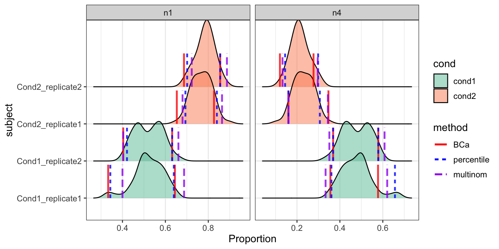

scDC.Rmdlibrary(scdney)
#> Warning: replacing previous import 'ggplot2::scale_discrete_manual' by
#> 'ggridges::scale_discrete_manual' when loading 'scdney'
#> Warning: replacing previous import 'Matrix::cov2cor' by 'stats::cov2cor'
#> when loading 'scdney'
#> Warning: replacing previous import 'MAST::vcov' by 'stats::vcov' when
#> loading 'scdney'
#> Warning: replacing previous import 'MAST::filter' by 'stats::filter' when
#> loading 'scdney'
#> Warning: replacing previous import 'Matrix::toeplitz' by 'stats::toeplitz'
#> when loading 'scdney'
#> Warning: replacing previous import 'Matrix::update' by 'stats::update' when
#> loading 'scdney'
#> Warning: replacing previous import 'MAST::logLik' by 'stats::logLik' when
#> loading 'scdney'data("sim")
exprsMat <- sim$sim_exprsMat
subject <- sim$sim_subject
cellTypes <- sim$sim_cellTypes
cond <- sim$sim_cond
dim(exprsMat)
#> [1] 500 260
table(subject, cellTypes)
#> cellTypes
#> subject n1 n4
#> Cond1_replicate1 24 21
#> Cond1_replicate2 30 27
#> Cond2_replicate1 57 18
#> Cond2_replicate2 66 17
table(cond, cellTypes)
#> cellTypes
#> cond n1 n4
#> Cond1 54 48
#> Cond2 123 35Set nboot = 50 for illustration.
res_scDC_noClust <- scDC_noClustering(cellTypes, subject, calCI = TRUE,
calCI_method = c("percentile", "BCa", "multinom"),
nboot = 50)
#> [1] "Calculating sample proportion..."
#> [1] "Calculating bootstrap proportion..."
#> [1] "Calculating percentile ..." "Calculating BCa ..."
#> [3] "Calculating multinom ..."
#> [1] "Calculating z0 ..."
#> [1] "Calculating acc ..."densityCI(res_scDC_noClust, c("cond1","cond1","cond1","cond1",
"cond2","cond2","cond2","cond2"))
#> Picking joint bandwidth of 0.0231
#> Picking joint bandwidth of 0.0231
res_GLM <- fitGLM(res_scDC_noClust, c("cond1","cond1","cond1","cond1",
"cond2","cond2","cond2","cond2"),
pairwise = FALSE)
#> boundary (singular) fit: see ?isSingular
#> boundary (singular) fit: see ?isSingular
#> boundary (singular) fit: see ?isSingular
#> boundary (singular) fit: see ?isSingular
#> boundary (singular) fit: see ?isSingular
#> boundary (singular) fit: see ?isSingular
#> boundary (singular) fit: see ?isSingular
#> boundary (singular) fit: see ?isSingular
#> boundary (singular) fit: see ?isSingular
#> [1] "fitting GLM... 10"
#> boundary (singular) fit: see ?isSingular
#> boundary (singular) fit: see ?isSingular
#> boundary (singular) fit: see ?isSingular
#> boundary (singular) fit: see ?isSingular
#> boundary (singular) fit: see ?isSingular
#> boundary (singular) fit: see ?isSingular
#> boundary (singular) fit: see ?isSingular
#> boundary (singular) fit: see ?isSingular
#> boundary (singular) fit: see ?isSingular
#> boundary (singular) fit: see ?isSingular
#> [1] "fitting GLM... 20"
#> boundary (singular) fit: see ?isSingular
#> boundary (singular) fit: see ?isSingular
#> Warning in checkConv(attr(opt, "derivs"), opt$par, ctrl =
#> control$checkConv, : Model failed to converge with max|grad| = 0.00861861
#> (tol = 0.001, component 1)
#> boundary (singular) fit: see ?isSingular
#> boundary (singular) fit: see ?isSingular
#> boundary (singular) fit: see ?isSingular
#> boundary (singular) fit: see ?isSingular
#> boundary (singular) fit: see ?isSingular
#> Warning in checkConv(attr(opt, "derivs"), opt$par, ctrl =
#> control$checkConv, : Model failed to converge with max|grad| = 0.00191245
#> (tol = 0.001, component 1)
#> boundary (singular) fit: see ?isSingular
#> [1] "fitting GLM... 30"
#> boundary (singular) fit: see ?isSingular
#> boundary (singular) fit: see ?isSingular
#> Warning in checkConv(attr(opt, "derivs"), opt$par, ctrl =
#> control$checkConv, : Model failed to converge with max|grad| = 0.00334757
#> (tol = 0.001, component 1)
#> boundary (singular) fit: see ?isSingular
#> boundary (singular) fit: see ?isSingular
#> boundary (singular) fit: see ?isSingular
#> boundary (singular) fit: see ?isSingular
#> boundary (singular) fit: see ?isSingular
#> boundary (singular) fit: see ?isSingular
#> boundary (singular) fit: see ?isSingular
#> [1] "fitting GLM... 40"
#> boundary (singular) fit: see ?isSingular
#> boundary (singular) fit: see ?isSingular
#> boundary (singular) fit: see ?isSingular
#> boundary (singular) fit: see ?isSingular
#> Warning in checkConv(attr(opt, "derivs"), opt$par, ctrl =
#> control$checkConv, : Model failed to converge with max|grad| = 0.00191245
#> (tol = 0.001, component 1)
#> Warning in checkConv(attr(opt, "derivs"), opt$par, ctrl =
#> control$checkConv, : Model failed to converge with max|grad| = 0.0253457
#> (tol = 0.001, component 1)
#> boundary (singular) fit: see ?isSingular
#> boundary (singular) fit: see ?isSingular
#> boundary (singular) fit: see ?isSingular
#> boundary (singular) fit: see ?isSingular
#> [1] "fitting GLM... 50"
#> boundary (singular) fit: see ?isSingularsummary(res_GLM$pool_res_fixed)
#> estimate std.error statistic df
#> (Intercept) 3.1714602 0.2026539 15.6496367 0.9051856
#> cellTypesn4 -0.1308123 0.2906763 -0.4500274 0.5635982
#> condcond2 1.0002846 0.2362019 4.2348713 0.9637542
#> subjectCond1_replicate2 0.2363888 0.1994143 1.1854152 1.1998800
#> subjectCond2_replicate1 -0.1013525 0.1593158 -0.6361735 1.1998800
#> cellTypesn4:condcond2 -1.1533851 0.3837918 -3.0052367 0.6294192
#> p.value
#> (Intercept) 0.05194823
#> cellTypesn4 0.76891192
#> condcond2 0.15475028
#> subjectCond1_replicate2 0.41965891
#> subjectCond2_replicate1 0.62431047
#> cellTypesn4:condcond2 0.30875527summary(res_GLM$pool_res_random)
#> estimate std.error statistic df p.value
#> (Intercept) 3.2966509 0.1692620 19.4766197 1.2938403 0.01482565
#> cellTypesn4 -0.1308293 0.2906775 -0.4500841 0.9372959 0.73465797
#> condcond2 0.8256887 0.1940417 4.2552126 1.4149857 0.09008831
#> cellTypesn4:condcond2 -1.1533464 0.3837841 -3.0051956 1.0470477 0.19539657res_scDC_clust = scDC_noClustering(cellTypes,
subject, calCI = TRUE,
calCI_method = c("percentile", "BCa", "multinom"))sessionInfo()
#> R version 3.6.0 (2019-04-26)
#> Platform: x86_64-apple-darwin15.6.0 (64-bit)
#> Running under: macOS Mojave 10.14.5
#>
#> Matrix products: default
#> BLAS: /Library/Frameworks/R.framework/Versions/3.6/Resources/lib/libRblas.0.dylib
#> LAPACK: /Library/Frameworks/R.framework/Versions/3.6/Resources/lib/libRlapack.dylib
#>
#> locale:
#> [1] en_AU.UTF-8/en_AU.UTF-8/en_AU.UTF-8/C/en_AU.UTF-8/en_AU.UTF-8
#>
#> attached base packages:
#> [1] stats graphics grDevices utils datasets methods base
#>
#> other attached packages:
#> [1] scdney_0.1.4
#>
#> loaded via a namespace (and not attached):
#> [1] amap_0.8-17 minqa_1.2.4
#> [3] colorspace_1.4-1 class_7.3-15
#> [5] ggridges_0.5.1 mclust_5.4.4
#> [7] rprojroot_1.3-2 htmlTable_1.13.1
#> [9] XVector_0.24.0 GenomicRanges_1.36.0
#> [11] base64enc_0.1-3 fs_1.3.1
#> [13] rstudioapi_0.10 mice_3.5.0
#> [15] roxygen2_6.1.1 lubridate_1.7.4
#> [17] prodlim_2018.04.18 manipulate_1.0.1
#> [19] mvtnorm_1.0-11 xml2_1.2.0
#> [21] codetools_0.2-16 splines_3.6.0
#> [23] doParallel_1.0.14 knitr_1.23
#> [25] Formula_1.2-3 nloptr_1.2.1
#> [27] clusteval_0.1 caret_6.0-84
#> [29] broom_0.5.2 cluster_2.0.9
#> [31] compiler_3.6.0 backports_1.1.4
#> [33] assertthat_0.2.1 Matrix_1.2-17
#> [35] lazyeval_0.2.2 acepack_1.4.1
#> [37] htmltools_0.3.6 tools_3.6.0
#> [39] igraph_1.2.4.1 gtable_0.3.0
#> [41] glue_1.3.1 GenomeInfoDbData_1.2.1
#> [43] reshape2_1.4.3 dplyr_0.8.2
#> [45] Rcpp_1.0.1 Biobase_2.44.0
#> [47] pkgdown_1.3.0 nlme_3.1-140
#> [49] iterators_1.0.10 timeDate_3043.102
#> [51] gower_0.2.1 xfun_0.8
#> [53] stringr_1.4.0 lme4_1.1-21
#> [55] dendextend_1.12.0 pan_1.6
#> [57] zlibbioc_1.30.0 MASS_7.3-51.4
#> [59] scales_1.0.0 ipred_0.9-9
#> [61] MAST_1.10.0 doSNOW_1.0.16
#> [63] parallel_3.6.0 SummarizedExperiment_1.14.0
#> [65] expm_0.999-4 RColorBrewer_1.1-2
#> [67] SingleCellExperiment_1.6.0 yaml_2.2.0
#> [69] memoise_1.1.0 gridExtra_2.3
#> [71] ggplot2_3.2.0 rpart_4.1-15
#> [73] latticeExtra_0.6-28 stringi_1.4.3
#> [75] S4Vectors_0.22.0 desc_1.2.0
#> [77] randomForest_4.6-14 foreach_1.4.4
#> [79] e1071_1.7-2 blme_1.0-4
#> [81] checkmate_1.9.3 BiocGenerics_0.30.0
#> [83] boot_1.3-22 BiocParallel_1.18.0
#> [85] lava_1.6.5 GenomeInfoDb_1.20.0
#> [87] rlang_0.4.0 pkgconfig_2.0.2
#> [89] commonmark_1.7 matrixStats_0.54.0
#> [91] bitops_1.0-6 evaluate_0.14
#> [93] lattice_0.20-38 purrr_0.3.2
#> [95] labeling_0.3 recipes_0.1.6
#> [97] htmlwidgets_1.3 tidyselect_0.2.5
#> [99] plyr_1.8.4 magrittr_1.5
#> [101] R6_2.4.0 IRanges_2.18.1
#> [103] snow_0.4-3 DescTools_0.99.28
#> [105] generics_0.0.2 Hmisc_4.2-0
#> [107] mitml_0.3-7 DelayedArray_0.10.0
#> [109] withr_2.1.2 pillar_1.4.2
#> [111] foreign_0.8-71 survival_2.44-1.1
#> [113] abind_1.4-5 RCurl_1.95-4.12
#> [115] nnet_7.3-12 tibble_2.1.3
#> [117] crayon_1.3.4 jomo_2.6-8
#> [119] rmarkdown_1.13 viridis_0.5.1
#> [121] grid_3.6.0 data.table_1.12.2
#> [123] ModelMetrics_1.2.2 digest_0.6.19
#> [125] tidyr_0.8.3 stats4_3.6.0
#> [127] munsell_0.5.0 viridisLite_0.3.0